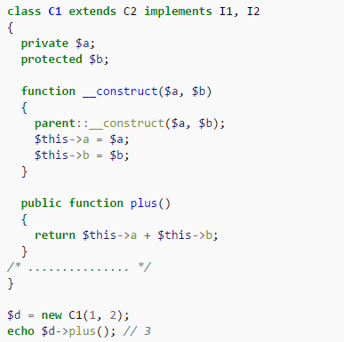
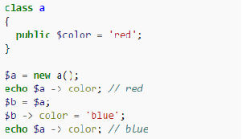

Ключевое слово class было зарезервировано ещё в третьей версии языка. В четвёртой версии стало возможно создавать классы и объекты на их основе. Однако принципы ООП поддерживались лишь частично, так например, все члены (переменные и методы) были открыты. К тому же создание объектов было дорогой операцией и работали они медленно.
Начиная с пятой версии PHP обладает полной поддержкой ООП. Работа с классами была оптимизирована и теперь такой код работает достаточно быстро.
Класс в PHP объявляется с помощью ключевого слова class. Методы и поля класса могут быть общедоступными (public, по умолчанию), защищёнными (protected) и скрытыми (private). PHP поддерживает все три основных механизма ООП — инкапсуляцию, полиморфизм подтипов и наследование (родительский класс указывается с помощью ключевого слова extends после имени класса). Поддерживаются интерфейсы (ставятся в соответствие с помощью implements). Разрешается объявление финальных, абстрактных методов и классов. Множественное наследование классов не поддерживается, однако класс может реализовывать несколько интерфейсов. Для обращения к методам родительского класса используется ключевое слово parent.
Начиная с версии 5.4.0 множественное наследование может быть реализовано с помощью механизма особенностей (англ. trait). Особенности похожи на примеси (англ. mixins), за исключением того что для них нельзя напрямую создать экземпляр. Повторное использование кода заключено в использовании кода особенности в нескольких классах. Допускается использовать в одном классе несколько особенностей. Механизм особенностей имеет средства разрешения конфликтов имён. При запуске программы код особенности будет «вкомпилирован» в код содержащего его класса.
Классы в PHP имеют ряд «магических» методов (англ. magic methods), начинающихся с двух символов подчёркивания. Особо стоит отметить конструктор (__construct(), в версиях до 5.0 конструктором служил метод, одноимённый с классом) и деструктор (__destruct()), а также методы чтения (__get()) и записи (__set()), свёртывания (__sleep()) и развёртывания (__wakeup()), клонирования (__clone()) и др. Эти методы являются достаточно гибким инструментом: переопределяя их, можно добиться существенного изменения поведения объекта.
Все функции-члены реализованы виртуальными и потому все они являются методами.
Экземпляры класса создаются с помощью ключевого слова new, обращение к полям и методам объекта производится с использованием оператора ->. Для доступа к членам класса из его методов используется переменная $this.

Начиная с пятой версии PHP, объекты передаются по ссылке:
